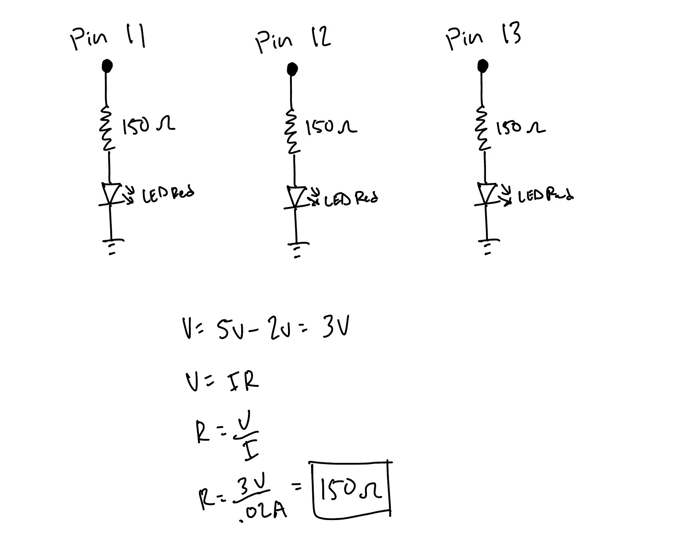
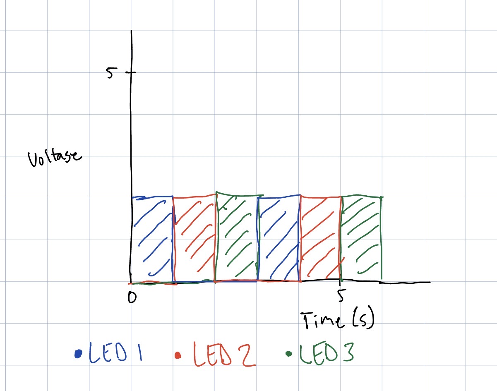

My Circuit:

This is my completed circuit with three red LEDs. My calculated resistance was 150 ohms for each LED, but I used 100 ohm resistors because it was the closest value. See schematic for calculations.
This is my completed circuit with three red LEDs. My calculated resistance was 150 ohms for each LED, but I used 100 ohm resistors because it was the closest value. See schematic for calculations.

// define LED pin connections
int LED_1 = 13;
int LED_2 = 12;
int LED_3 = 11;
// the setup function runs once when you press reset or power the board
void setup() {
// initialize digital pin LED_1, LED_2, LED_3 as an output.
pinMode(LED_1, OUTPUT);
pinMode(LED_2, OUTPUT);
pinMode(LED_3, OUTPUT);
}
// the loop function runs over and over again forever
void loop() {
// Turn LED #1 on by setting the pin to HIGH voltage level
digitalWrite(LED_1, HIGH);
// Turn LED #2 off by setting the pin to LOW voltage level
digitalWrite(LED_2, LOW);
// Turn LED #3 off by setting the pin to LOW voltage level
digitalWrite(LED_3, LOW);
// wait for a second
delay(1000);
// Turn LED #1 off by setting the pin to LOW voltage level
digitalWrite(LED_1, LOW);
// Turn LED #2 on by setting the pin to HIGH voltage level
digitalWrite(LED_2, HIGH);
// Turn LED #3 off by setting the pin to LOW voltage level
digitalWrite(LED_3, LOW);
// wait for a second
delay(1000);
// Turn LED #1 off by setting the pin to LOW voltage level
digitalWrite(LED_1, LOW);
// Turn LED #2 off by setting the pin to LOW voltage level
digitalWrite(LED_2, LOW);
// Turn LED #3 on by setting the pin to HIGH voltage level
digitalWrite(LED_3, HIGH);
// wait for a second
delay(1000);
}

Blinking lights :)

To blink independently, each LED needs its own pin and our Arduino Uno R3 has 12 usable digital pins. Therefore, 12 LEDs can blink independently with our Arduino.
Calculating how much current it would draw:
Assuming I = 20mA
12 LEDS x 20mA = 240mA
However, single pin current should not exceed 40mA and total current should not exceed 150mA. Therefore, you would need to add the necessary resistors in order to operate all the LEDs safely.
For me, I could no longer tell they were blinking when there was 15 ms between blinks, or about 66 flashes per second.
I used ChatGPT to help with some of the formatting of my webpage. I specifically used it on displaying the code snippet for my circuit.
The prompt(s) I used were:
Prompt: Is there a way I can display a snippet of code without having to include a line break
after every line of code?
Output: You can use HTML (<'pre'>) tag to display code while preserving its line breaks and spacing, without needing to add a (<'br'>) tag after every line.